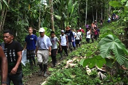
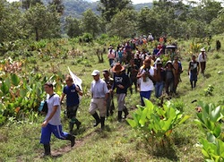

Dear Friends,
Walking side-by-side, relying on one another to cross rivers and transverse muddy paths; this has been our story for the past 11 years. With your support, the Fellowship of Reconciliation helped not only to keep the Peace Community of San José de Apartadó safe through our physical presence, but also to bring our eyes and ears to you, sharing what we observe on the ground in Colombia with our networks around the world.
Your generous donation will help us continue this work in Colombia, providing protection and political visibility.
Just a few weeks ago, we walked with the Pilgrimage for Life Caravan. Our mission: to peacefully and collectively confront armed groups that continue to murder, threaten, and displace Colombian farmers. Led by the courage of the Peace Community, 150 people walked together, publicly asserting our right to remain there, with dignity, without guns or violence.
We're so grateful to have you as an ally and your ongoing support helps the work in Colombia respond as new needs arise.
Just as the Peace Community's journey has been characterized by twists and turns, lessons learned and gains built, our work has also evolved. Most recently, this journey has led toward the accompaniment work in Colombia becoming an independent branch of the international FOR network, known henceforth as FOR Peace Presence.
As FOR-USA focuses its work on strengthening grassroots organizing and action inside the United States, FOR Peace Presence is thrilled to become the first transnational branch of the Fellowship of Reconciliation. As a part of the International FOR family, FOR Peace Presence will work to build alliances with other organizations and communities while remaining an active part of the growing movement to build a more peaceful, just, and beautiful world. FOR-USA will continue to organize for peace throughout the Americas by mobilizing its members, allies, and faith-based partners through its regional structure of grassroots activism.
This holiday season, please consider making a generous donation toward the establishment of FOR Peace Presence in the name of a loved one who values active nonviolence and the defense of life, land, and dignity. We could not do our vital work of standing up for human rights in Colombia, in the United States, and all around the globe without you.
If you'd like to begin to receive communication from FOR Peace Presence, please use this contact form to subscribe.
Together, let's build true and lasting peace and demand more just and humane government policies and corporate practices!
In solidarity,
Candice M. Camargo, Executive Director, FOR Peace Presence
Kristin Stoneking, Executive Director, FOR-USA |